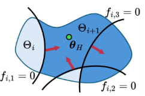
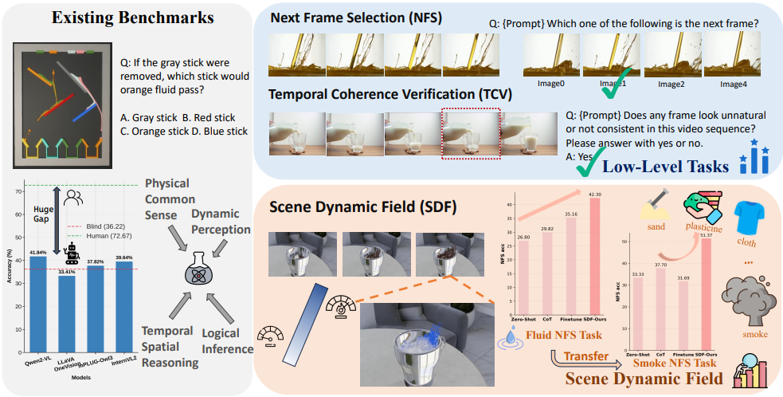

Research Interests
My research interests lie in robot learning, learning-based control and human-robot interaction.
I want to build human-centered robotsb, robots that can:
(1) Learn from humans: leverage human effort and human knowledge efficiently (through explicit human feedback, implicit cues in human videos and the vast latent knowledge encoded in human language and datasets).
(2) Act like humans: incorporate bimanual tactile dexterous systems capable of performing much more complex tasks that could approach — or even surpass — human capability.
(3) Collaborate with humans: collaborate with non-expert users, adapt to ambiguous instructions, and personalize their behavior to diverse human preferences.
in the future. Feel free to contact me if we share same research interests.
I am currently seeking a Ph.D. opportunity for Fall 2026 in robotics!
|
News
[July. 2025] Start internship at UMD, College Park, Maryland.
[June. 2025] HSBC code is released. Check our page for more details.
[May. 2025] HSBC is accepted by ICML 2025.
[August. 2024] Start internship at ASU, Tempe, Arizona.
|
|

|
Robust Reward Alignment via Hypothesis Space Batch Cutting
Zhixian Xie*,
Haode Zhang*,
Yizhe Feng,
Wanxin Jin
ICML, 2025
project page / paper / code
We propose a novel geometric view of reward alignment as an iterative cutting process over the hypothesis space.
Our batched cutting method significantly improves data efficiency by maximizing the value of each human preference query.
We introduce a conservative cutting algorithm that ensures robustness to unknown erroneous human preferences without explicitly identifying them.
|

|
Beyond Static Vision: Scene Dynamic Field Unlocks Intuitive Physics Understanding in Multi-modal Large Language Models
Nanxi Li,
Xiang Wang,
Yuanjie Chen,
Haode Zhang,
Hong Li,
Yong-Lu Li
In submission
We propose Scene Dynamic Field (SDF), a cost-efficient framework that integrates physics simulators into multi-task fine-tuning,
substantially improving MLLMs’ intuitive physics understanding and achieving strong generalization across physical domains.
|
The website is built upon this template.
|
|
{kind=link}